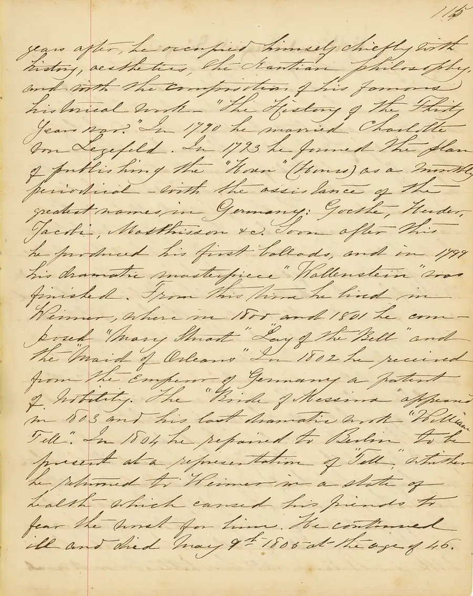

Commonplace Book, First Pages
Other people's best sentences, copied by hand into a book that is yours: a centuries-old way to build a mind, and an index that argues back.
Ages 13–1425–40 min4 materials
- Ages
- 13–14
- Group
- 2–20 kids
- Time
- 25–40 min
- Where
- Indoors
- Prep
- Some prep needed

Setup
Prepare the room, not the content: this record's adult work is almost entirely restraint. Gather a spread of source material rich enough to hunt in, poetry, speeches, essays, reference books with strong sentences in them, the texts the group is already studying, and resist, completely, the urge to prepare a list of quotations worth copying: the moment the adult supplies the passages, the book becomes homework with a ribbon in it. Prepare instead the book's architecture on a demonstration page you will show and then put away: a passage copied entire, its source named honestly beneath it (author, work, and where you found it), a keeper's note of a line or two saying why this one, and, demonstrated last, because it is the point, its index entry at the back, under a theme word the keeper chose. Set the session's privacy law in the room's arrangement itself: books open on laps and tables, read by their keepers only, and the sharing round later is by invitation, from the keeper's own mouth, never by passing books around.
Materials
- a blank book worth keeping (hardback, paper that takes ink without bleeding. The keeper's own, chosen, not issued; a commonplace book kept in a book its keeper dislikes is a diary of resentment)
- a pen the keeper likes writing with (the copying is by hand and by design, so the instrument matters and the choice of it is part of the first session)
- source material to hunt in (the room's books, poems, speeches, song lyrics the keeper knows by heart, family sayings, lines remembered from anywhere. The hunt is the keeper's taste at work, and no canon is issued)
- index pages reserved at the back from the first day (the book's second half of genius: every entry will be findable, by theme, in the keeper's own words)
Steps
- The framing, books still closed: 'For about five hundred years, people who intended to think for a living kept a book like this. Not a diary, a diary records your days. A commonplace book records other minds: the sentences you meet that are too good to leave behind, copied out by your own hand, in your own order, under your own themes. A commonplace book is a conversation with people who are not in the room, some of them dead for centuries, all of them still talking, because you copied them down. Your hand matters: copying is slow, and the slowness is the mechanism. A passage you have written out letter by letter has been read more closely than anything you have ever photographed with your eyes. The laws: you choose everything. Nothing is assigned, nothing is graded, and spelling a great sentence slightly wrong because you copied it from memory is not an error in this book. It is evidence of what your mind kept, and you will note 'from memory' beside it like an honest scholar.'
- First pages, the hunt: keepers open their books and hunt. The room's work is silent and various, reading, pausing, the particular stillness of a person deciding whether a sentence earns a page. Each keeper copies their first passage entire, names its source beneath it as honestly as they can (found in a named book, remembered from a song, 'overheard, author unknown'. Every provenance is acceptable except a false one), and writes their keeper's note: why this one, in a line or two, addressed to nobody ('because it is the truest thing anyone has said about losing'; 'because I want to be able to say it like this one day'). The adult keeps a book too, in the same silence, under the same laws, a room where the adult also hunts is a room where hunting is real work and not a task with a warden. Time is protected: nobody is asked how many they have found, and a keeper who copies one passage in the whole session and notes it well has used the session exactly right.
- The index, the book's engine: with the first entries made, keepers turn to the reserved back pages and index what they have copied, not by author, but by the theme they would one day search under when they needed the sentence again: courage, home, weather, beginning again, how to lose. This is the session's quietly radical work, and the adult names it while it happens: 'Your index is your philosophy. Two keepers can copy the same passage and file it under different themes, and both filings are true. The theme is where YOU would look for it in a bad week, and nobody can assign that.' A theme with one entry is a promise; a theme that starts collecting entries across the year becomes the keeper's portrait of what they care about, drawn without their ever sitting for it. Keepers are shown the demonstration index once more if they want it. Then the demonstration book is put away for good, because the architecture is theirs now to keep or quietly change.
- The sharing round, by invitation only: the adult opens it by reading one entry from their own book, passage, source, note, and its index theme, modelling the full ceremony at full size, including the honesty entries ('from memory, and I may have it wrong'). Then the invitation passes around the room and is declined as easily as it is accepted: a keeper may read a passage they copied, or describe a theme that has started in their index without reading anything filed under it, or pass, and all three are complete contributions. Nothing is passed hand to hand. A passage read aloud is received with the room's one permitted response, the keeper is thanked by name for the find ('thank you for finding that'), because the find is the keeper's work even where the words are not, and the record is careful to honour the right thing.
- Closing, and the book's life after the session: keepers write the date on the inside cover with a line the adult dictates and the room adopts, 'Begun on this date, kept honestly, added to whenever a sentence earns it', and the session's practical future is settled in the open: where books live between sessions (with their keepers; the book that stays in a drawer at school is a book that stops growing), and the standing invitation that opens future sessions, the first five minutes of any later gathering can be commonplace minutes, hunts and indexing, whenever the keepers call for them. The tell-back is said with the books closed in their keepers' hands: 'You have each started the only book that will ever contain exactly your taste. It will argue with you at twenty, you will find passages your older self cannot believe you loved, and themes you cannot believe you named so early, and that argument is not the book failing. That argument is the book working, across the longest distance a school exercise ever travels: the distance between who is copying today and who will be reading then.'
Variations
Easier: A first-pages-only version: the framing, one passage hunted and indexed, the inside-cover line, the whole founding ceremony inside twenty minutes, for a group that will keep its books in later sessions of its own.
Harder: A themed version: a session whose hunt is fenced to one territory, beginnings, at the start of a year; leave-takings, at its end, with keepers' indexes afterwards showing how differently one theme can be stocked by different minds.
⚠️ Safety
The book's privacy is its safety system and it is absolute: a commonplace book is read by its keeper and by nobody else without the keeper's invitation, given freely for that reading, not borrowed, not passed around in the sharing round, not photographed, not quoted back at its keeper in jest, and the adult keeps their own book under the same law and is seen to keep it. Provenance honesty is the record's other law, taught as craft rather than policed as crime: a passage copied from memory is labelled from memory, a source half-remembered is written as half-remembered, and nothing in a keeper's book may be dressed in a grander source than it has, because the book's whole authority, decades from now, rests on its keeper being able to trust what its younger self wrote. Materials are ordinary and personal, pens chosen by their keepers, books kept by their owners, and the session's only physical rule is the room's ordinary one: a silent working room is arranged so that anyone who needs to move, stretch, or step out can do so without ceremony or explanation.
🤝 Inclusion notes
The hand in this record is any hand, or none: a passage can be copied by the keeper's own writing, dictated to a willing scribe at the keeper's exact words (the entry is the keeper's; the penmanship is a detail the book does not grade), typed and pasted in where that is the keeper's way of keeping, or held as a photographed page the keeper transcribes later. The copying's slowness is the mechanism, and every route that preserves the close reading preserves the record. The index, the book's real engine, is pure judgement and is open at full size to every keeper: themes are chosen, named, and searched in whatever register the keeper thinks in, and a theme given as a drawing, a colour, or a single held-up word at indexing time is filed as truly as a written one. The sharing round runs by invitation in every register, read, signed, shown from the keeper's own hands at the distance the keeper chooses, and passing is a complete contribution, protected in the framing's own words. A keeper whose whole session is one passage, well chosen and honestly indexed, has used the record at its full depth, and the closing says so in general terms so that it is heard by the person it belongs to.
⭐ Tried this? Rate it
Your ratings live in this browser only. Nobody else can see them. There are no community ratings here; every star on this card is yours.
Rate this activity, add a note, or write a reflection
✏️ Quick reflection
Optional, saved with your rating, and exported with "📋 Copy my week".
Full activity card,